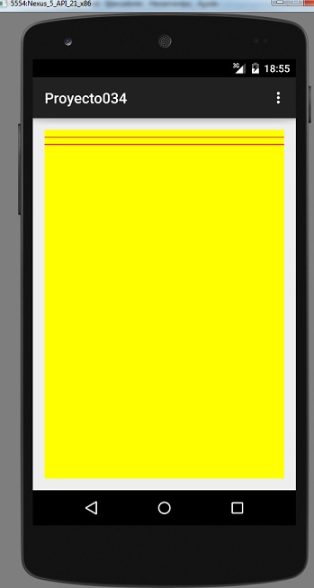
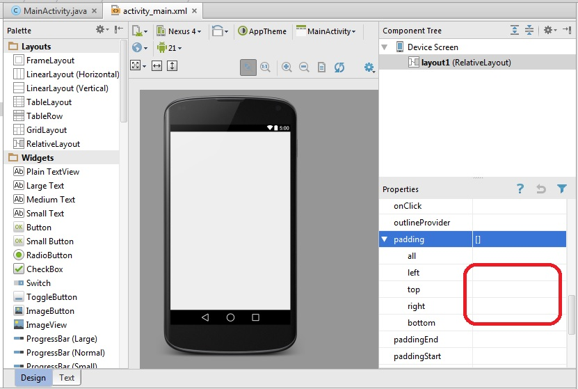

Problema:
Pintar el fondo de color amarillo y dibujar una serie de líneas con distintos estilos.
1 - Creamos un proyecto llamado: proyecto034
Borramos el TextView que agrega automáticamente el Android Studio y definimos el id del RelativeLayout con el valor: layout1:

Ahora codificamos la clase donde se encuentra toda la lógica para pintar el fondo y dibujar las líneas:
package ar.com.tutorialesya.proyecto034;
import android.content.Context;
import android.graphics.Canvas;
import android.graphics.Paint;
import android.support.v7.app.ActionBarActivity;
import android.os.Bundle;
import android.view.Menu;
import android.view.MenuItem;
import android.view.View;
import android.widget.RelativeLayout;
public class MainActivity extends ActionBarActivity {
@Override
protected void onCreate(Bundle savedInstanceState) {
super.onCreate(savedInstanceState);
setContentView(R.layout.activity_main);
RelativeLayout layout1 = (RelativeLayout) findViewById(R.id.layout1);
Lienzo fondo = new Lienzo(this);
layout1.addView(fondo);
}
@Override
public boolean onCreateOptionsMenu(Menu menu) {
// Inflate the menu; this adds items to the action bar if it is present.
getMenuInflater().inflate(R.menu.menu_main, menu);
return true;
}
@Override
public boolean onOptionsItemSelected(MenuItem item) {
// Handle action bar item clicks here. The action bar will
// automatically handle clicks on the Home/Up button, so long
// as you specify a parent activity in AndroidManifest.xml.
int id = item.getItemId();
//noinspection SimplifiableIfStatement
if (id == R.id.action_settings) {
return true;
}
return super.onOptionsItemSelected(item);
}
class Lienzo extends View {
public Lienzo(Context context) {
super(context);
}
protected void onDraw(Canvas canvas) {
canvas.drawRGB(255, 255, 0);
int ancho = canvas.getWidth();
Paint pincel1 = new Paint();
pincel1.setARGB(255, 255, 0, 0);
canvas.drawLine(0, 30, ancho, 30, pincel1);
pincel1.setStrokeWidth(4);
canvas.drawLine(0, 60, ancho, 60, pincel1);
}
}
}
Veamos el método onDraw donde pintamos el fondo de la componente llamando al método drawRGB donde indicamos la cantidad de rojo, verde a azul:
protected void onDraw(Canvas canvas) {
canvas.drawRGB(255,255,0);
Creamos un objeto de la clase paint y definimos el color rojo (recordemos que el primer parámetro indica el valor de la transparencia, si vale 255 es totalmente opaco, con un valor menor el trazo de la línea tendrá transparencia.
El método para graficar una línea se llama drawLine y tiene como parámetros la columna y fila del punto inicial y el tercer y cuarto parámetro indica la columna y fila del punto final de la línea (en este ejemplo se dibujará una línea horizontal en la fila 30 y tendrá un ancho que coincide con el ancho del dispositivo), el último parámetro es el objeto de la clase Paint que indica el color de la línea:
Paint pincel1=new Paint();
pincel1.setARGB(255,255,0,0);
canvas.drawLine(0, 30, ancho, 30, pincel1);
La siguiente línea la dibujamos en la fila 60 pero previamente cambiamos el grosor del pincel llamando al método setTrokeWidth indicando que serán 4 píxeles el grosor:
pincel1.setStrokeWidth(4);
canvas.drawLine(0, 60, ancho, 60, pincel1);
La vista previa en el dispositivo será:
Este proyecto lo puede descargar en un zip desde este enlace: proyecto034.zip
Como vemos el objeto fondo que creamos en el método onCreate del ActionBarActivity ocupa todo el espacio del RelativeLayout, si queremos que ocupe todo el espacio de la pantalla debemos modificar la propiedad padding del RelativeLayout borrando el Padding left, top, right y bottom:
Problema propuesto
-
Confeccionar una aplicación que muestre una hoja en la pantalla similar a esta:

Este proyecto lo puede descargar en un zip desde este enlace: proyecto035.zip